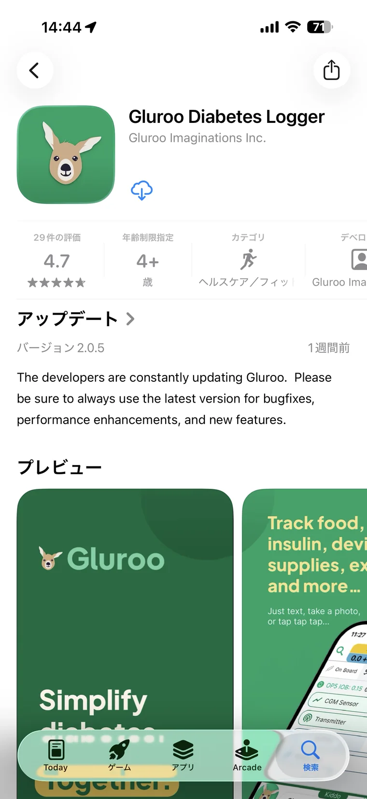
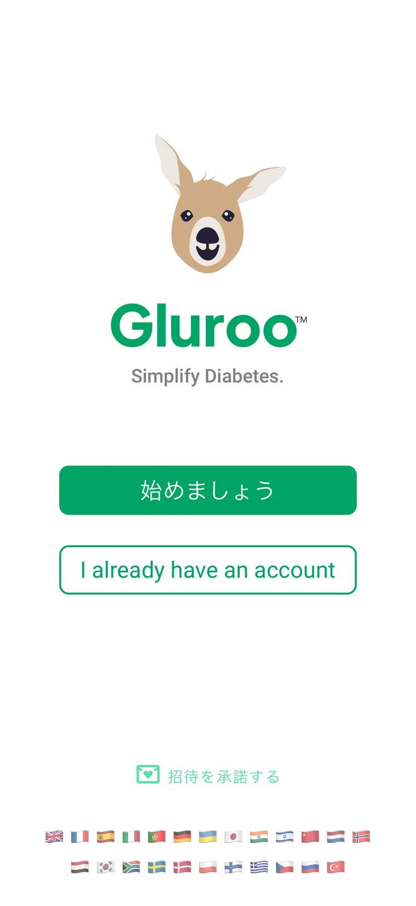
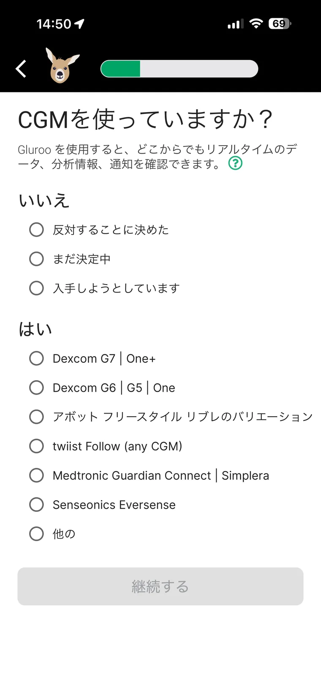
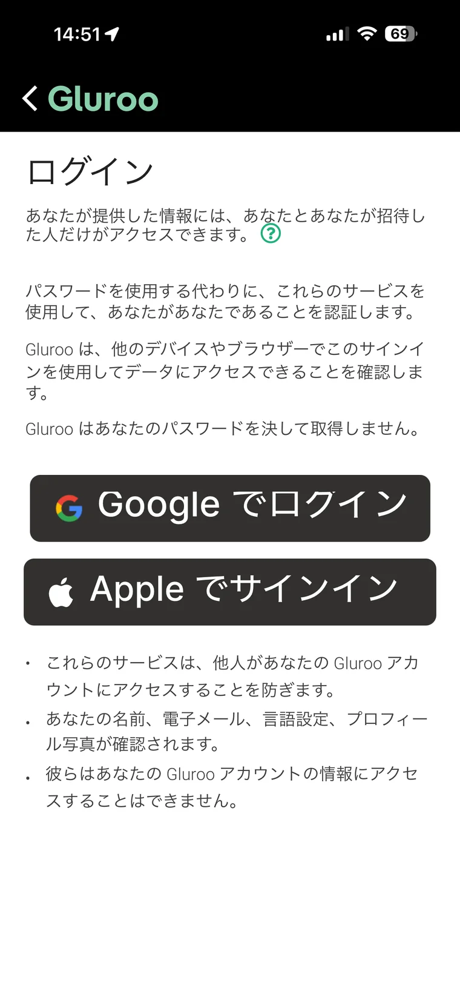
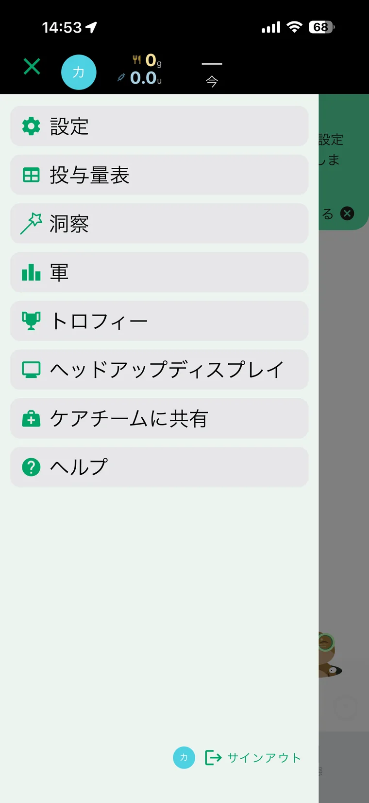
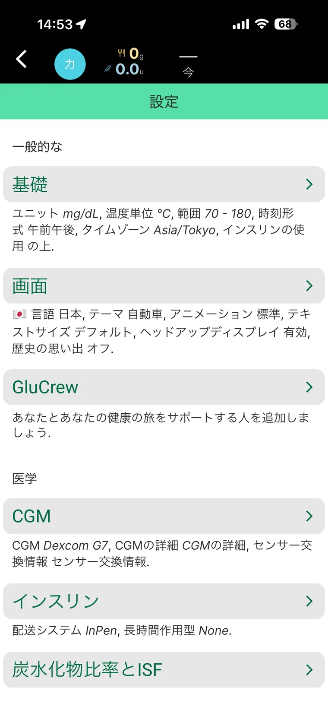
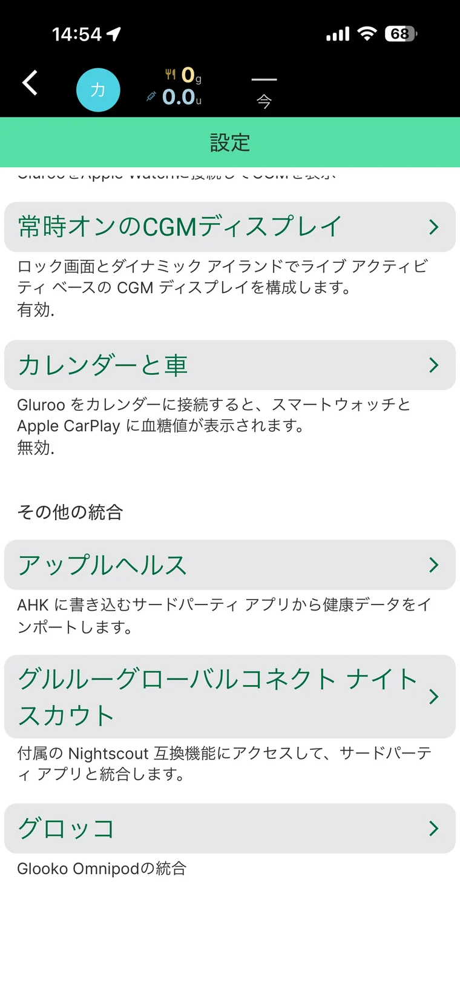
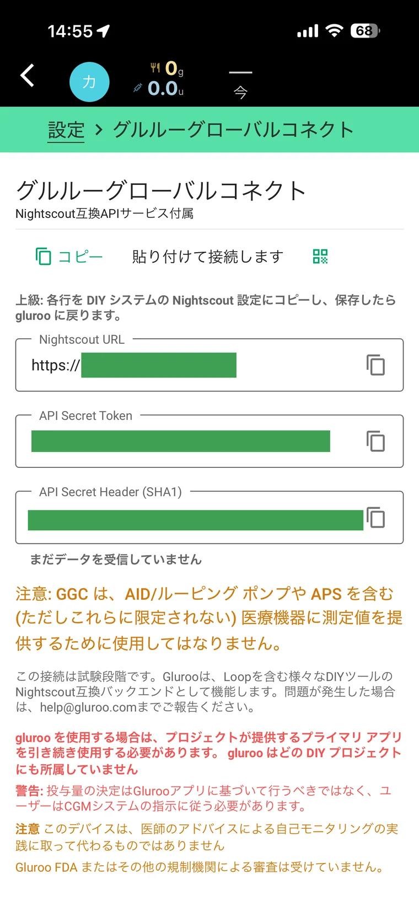

画像を見ながら、ひとつずつ
Glurooを準備する方法
iPhoneへGlurooを入れるところから、GlucoScopeへ貼り付ける2つの情報を表示するところまで案内します。
先に知っておきたいこと
GlurooはGlucoScopeとは別の会社が提供しているサービスです。現在は無料でテスト利用できますが、今後、料金・機能・画面・接続方法が変わる場合があります。
Gluroo側の障害や変更により、一時的にGlucoScopeへデータを読み込めなくなることがあります。困ったときは、このガイドとGluroo側の案内を順番に確認します。
この案内の対象
FreeStyle Libre 2またはDexcom G7を使っている方の、かんたんな接続方法を準備しています。
Guardian／MiniMed 780Gは、この案内の対象外です。現在は別のアプリと自分専用のNightscout環境が必要になるため、上級者向けです。
Guardianの構成例を見るこのガイドで進めること
- App StoreからGlurooを入れる
- Glurooの初期設定をする
- Libre 2またはDexcom G7をGlurooにつなぐ
- GlucoScopeへ貼る2つの情報をコピーする
App StoreでGlurooを開きます
- iPhoneで青い「App Store」を開きます。
- 検索に「Gluroo」と入力します。
- カンガルーの絵がある「Gluroo Diabetes Logger」を開きます。
- 「入手」または雲の印を押します。すでに入っている場合は「開く」や「アップデート」と表示されます。

Glurooを開いて、初期設定を始めます
- 「始めましょう」を押します。
- 表示される質問へ、分かる範囲で答えます。
- あとから決めたい項目は、今は入力しなくて大丈夫です。
Glurooの画面は更新で変わることがあります。言葉が少し違っても、同じ内容の選択肢を探してください。

使っているCGMを選びます
「CGMを使っていますか？」という画面が出たら、ご自身が使っているものを選びます。
- Dexcom G7を使っている方は「Dexcom G7」を選びます。
- FreeStyle Libre 2を使っている方は、表示されるLibre 2の項目を選びます。
Guardianは現在のかんたん接続では利用できません。

AppleまたはGoogleでログインします
普段使っているApple IDまたはGoogleアカウントを選びます。次回も同じ方法でログインしてください。
AppleやGoogleのパスワードをGlucoScopeへ入力することはありません。

Libre 2またはDexcom G7をGlurooにつなぎます
使っているセンサーに合わせて、準備するアカウントが異なります。
現時点では、公式案内に沿った準備手順を掲載しています。DexcomやLibreLinkUpのパスワードをGlucoScopeへ入力することはありません。

左上のメニューから「設定」を開きます
- Glurooの左上にある三本線を押します。
- メニューの上の方にある「設定」を押します。

設定画面を下へ進みます
設定画面には多くの項目があります。治療に関する設定は変更せず、画面を下へスクロールします。
「CGM」は、Glurooへ血糖値が届いているか確認するときに使います。

「グルローグローバルコネクト」を開きます
「グルローグローバルコネクト ナイトスカウト」という項目を押します。
画面ではカタカナ表記ですが、英語で「Gluroo Global Connect Nightscout」と表示される場合もあります。

2つの情報をコピーします
表示された画面で、右側のコピーの印を押します。
- Nightscout URL → GlucoScopeの「接続先URL」へ貼ります。
- API Secret Token → GlucoScopeの「接続用の合言葉」へ貼ります。
API Secret Header (SHA1)は、最初のGlucoScope接続では使いません。
スクリーンショット、LINE、メール、SNSへ載せず、ご自身のGlucoScope画面へ直接貼り付けてください。
